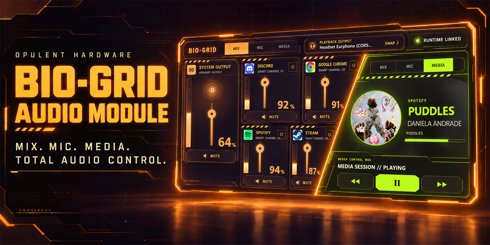
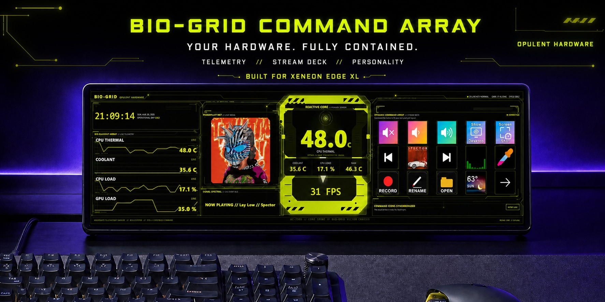
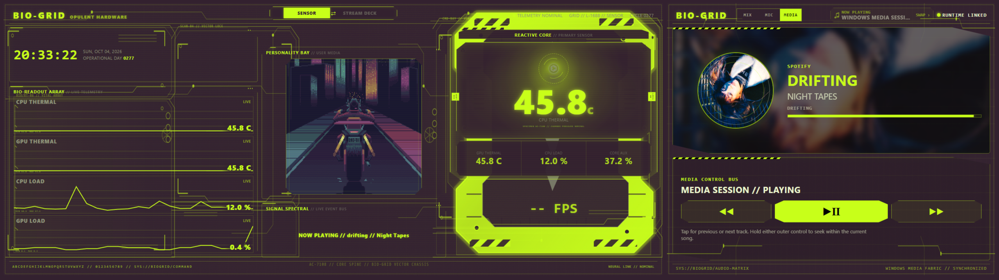

Glanceable
Essential status is readable immediately, without opening another window or leaving your current task.
Built for CORSAIR XENEON EDGE
BIO-GRID is a growing family of tactile interfaces that turns XENEON EDGE into the control surface your setup has been missing.

One visual system. Multiple capabilities.
Essential status is readable immediately, without opening another window or leaving your current task.
Controls are sized, spaced, and organized for a dedicated touchscreen—not squeezed down from a desktop app.
Colors, backgrounds, card surfaces, blur, labels, and layouts can adapt to the rest of your setup.
Choose the interface for the moment
Each BIO-GRID widget stands on its own. Together, they give XENEON EDGE a coherent suite of interfaces for command, audio, media, and—over time—more of the PC.

Telemetry. Stream Deck. Personality.
A complete XL command center combining live system readouts, personal media, a reactive sensor core, and synchronized Stream Deck controls.
Mix. Mic. Media. Total audio control.
Control Windows audio without breaking focus. Mix apps, switch playback devices, manage your microphone, and control now playing from one adaptive touch interface.
Two widgets. One continuous visual system.
Place Command Array alongside the Audio Module to combine live telemetry, personal media, system controls, audio mixing, and playback control across a single XENEON EDGE workspace.

COMMAND ARRAY AUDIO MODULEMade for the space you have
The Audio Module is designed for every horizontal XENEON EDGE widget size. The interface changes its hierarchy—not simply its scale—so the most useful controls remain comfortable to touch.
M // BALANCED CONTROL SURFACE
Your setup should look like yours
Use the controls below to preview how one interface can move between BIO-GRID’s signature lime, warm industrial orange, cool cyan, and your own visual direction.
LIVE STYLE PREVIEW
OPULENT HARDWARE
Build the look. Keep the recipe.
A growing archive of complete BIO-GRID setups. Each guide preserves its publish date, source files, palette, marketplace modules, and the steps used to build it.
Local by design
The Opulent Hardware Module Runtime enables deeper Windows controls for compatible modules. It runs locally, starts with Windows, and keeps audio and personal data on your PC.
Built as a system, released with purpose
Future concepts are shown as direction, not release commitments. Each new module must earn its place by making a real workflow faster, clearer, or more tactile.
Command Array establishes the BIO-GRID language.
Mixing, microphone, device, and media control.
New focused experiences for the BIO-GRID ecosystem.
A more unified experience as platform capabilities evolve.
Enter the system
BIO-GRID Command Array is available now for XENEON EDGE through Elgato Marketplace.
Get Command Array